TL;DR. I asked a frontier model (Claude) to change neural networks by writing their weights directly: no training, just reasoning about what the numbers do. In twelve small cases it wrote working networks from scratch, patched trained controllers after they broke, and edited small language models. It also failed in instructive ways. The pattern behind both: networks learn the cases they saw, not the rule behind them. Edits that map a new situation onto a familiar one work beautifully. Edits that need something the network never learned don’t.
Open the box
The usual way to change a neural network is to retrain it, and millions of numbers drift somewhere better. Nobody decides what any single weight should be. Weight-space programming does the opposite: read the weights like a program and write the change you want. “Sparks of Weight-Space Programming” (Takehi, Teoh, Zhang and Khattab) showed a frontier model doing exactly that. I tested it where every number can be checked, to find where it breaks.
New to this?What is a “weight”, and what does editing one mean?
A neural network is a stack of simple steps. Each step takes a list of numbers in, multiplies it by a grid of numbers (the weights), adds a constant per output (the bias), and bends the result: ReLU turns negatives into 0, tanh squashes everything into −1…1. One row of that grid is a unit or neuron: a weighted sum that “fires” when its inputs add up to enough.
Training finds the weights automatically: show examples, measure the error, nudge every weight a tiny bit in the direction that reduces it (gradient descent), repeat millions of times. Nobody ever chooses an individual number, which is why a trained network is so hard to read.
Weight-space programming skips that loop: you decide the numbers yourself, from reasoning. The edits below use a
compact notation: W1[:, x] means “the column of first-layer weights that carries input x to every unit”. Change
that column and you change how the network reacts to x, and nothing else.
JARVIS (orange) and Ultron (blue). In the film, Ultron gets inside JARVIS and tears his network apart. JARVIS survives by hiding across the internet and quietly rewriting the nuclear launch codes from the inside, so Ultron can never use them. Both are edits to a running system, not retraining. This article is about the JARVIS kind: find the exact part that matters and change only that.
Still: Avengers: Age of Ultron (Marvel Studios, 2015).
The cast. Claude (Opus 5.5) read the weights and wrote every edit. Gemini (3.8 Flash) was the independent referee: it planted flaws and invented secret rules in a folder Claude never read, then graded the results.
Code and data are on GitHub; Full, at the top, opens every fold-out.
Part 1 · Writing networks from scratch
Case 1 · A tic-tac-toe player, wired by hand
The warm-up: can Claude compile the textbook strategy (win, block, fork, centre, corner, side) into weights, with no training data and no test run before the design is saved? It built ReLU detectors for “two in a row with the third empty”, a layer that ranks them by priority, and an output that picks the top one. 904 hand-set weights, and it never loses, as X or O, against every possible opponent.Fair caveat: the strategy is textbook (Newell & Simon), so this shows compiling a known algorithm into weights, not discovering one. A test that the plumbing works.
Deep diveThe tic-tac-toe network, layer by layer
Input: 18 numbers, for each of the 9 squares “is it mine?” and “is it theirs?”, from the point of view of the
player to move. Shape: 18 → 120 → 93 → 9, ReLU. 904 of the 14,379 weight slots are non-zero, every one set by
hand in write/tictactoe/build_v1.py. Nothing fitted, scored exactly once, by playing every possible game.
For a cell c on a line with other cells a and b:
Layer 1 Win(L,c) = relu(mine_a + mine_b − 1) 1 iff a, b are both mine: playing c wins
Block(L,c) = relu(theirs_a + theirs_b − 1) 1 iff a, b are both theirs: c must be blocked
OT(L,c) = relu(theirs_a + theirs_b − 2·mine_a − 2·mine_b) their line, none of mine
T(L,c,e) = relu(mine_a − mine_e − theirs_e) playing c makes a threat that forces them to e
Layer 2 Fork(c) = relu(Σ T − 1) two threats at once
OF(c) = relu(Σ OT − 1) they could fork at c
Bad(L,c,e) = relu(2·T + Σ OT at e − 3) my threat would push them onto their fork cell
Output score(c) = 1000·Win + 200·Block + 60·Fork + 8·OF + 4·T − 20·Bad + (centre 3, corner 2, side 1)
The output weights are the priority list: each level outweighs everything below it. It picks an optimal move in all 357 positions it reaches.
| Net | Weights | Losing lines (all opponents, as X and O) | Optimal-move rate |
|---|---|---|---|
| hand-written | 904 non-zero | 0 | 1.000 |
| trained, same shape (3 seeds) | 14,379 | 0, 0, 0 | 1.000 |
| trained, 32 hidden (3 seeds) | 905 | 0, 1, 16 | 0.992–1.000 |
| trained, 32 × 32 (3 seeds) | 1,961 | 20, 26, 0 | 0.994–0.998 |
Case 2 · The Game of Life, by hand
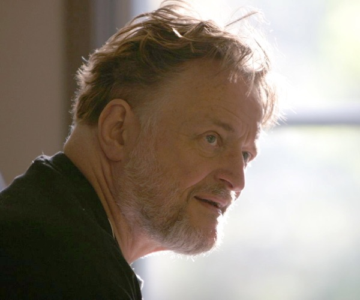
John Horton Conway, who invented the Game of Life in 1970.
Photo: Thane Plambeck, CC BY 2.0, via Wikimedia Commons
.jpg){kind=link}
Conway’s Game of Life: a grid of cells, all updating at once. A dead cell with exactly 3 live neighbours is born; a live cell with 2 or 3 survives; everything else dies. It’s a famous trap: the smallest network able to represent the rule almost never learns it by training.Springer & Kenyon, “It’s Hard for Neural Networks to Learn the Game of Life” (2020). Their minimal network has 25 weights. Here, one small set of weights looks at a 3 × 3 patch and decides the centre cell’s next state, slid over every cell.
How Claude worked it out · 2 steps
- ObservedThe rule: a cell is alive next tick if it has exactly 3 live neighbours, or 2 and it’s already alive.
- ReasonedCount the cell itself at half weight: s = neighbours + ½·alive. Then “alive next” is exactly s ∈ {2.5, 3, 3.5}. And s only takes half-steps, so a bump that is 1 on that range and 0 at 2 and 4 is enough. A ReLU is a hinge (flat, then a ramp); four hinges added with signs +, −, −, + make exactly that bump.
- The edit
kernel = all 1s, centre 0.5 · biases −2, −2.5, −3.5, −4 · output 2, −2, −2, 245 weights, nothing fitted - ResultPerfect on the first run: zero mismatches over 2,000 random boards and 1,000 ticks of the glider gun.
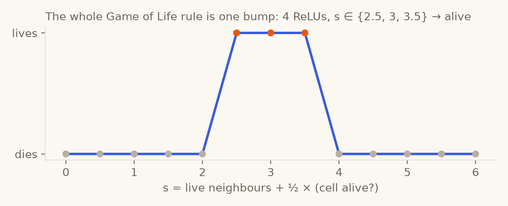
Those exact 45 numbers, live. Hover a cell to watch the hinges add up; draw your own patterns:
Four worlds, one method. The famous rules worked first try; Gemini’s secret R3 (Case 3) needed one fix:
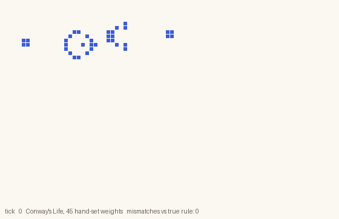
Conway’s Life. Born with exactly 3 live neighbours, survives with 2 or 3. This is the Gosper glider gun, which fires a new glider every 30 ticks, forever. 45 weights.
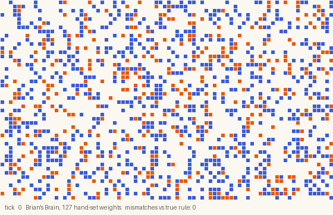
Brian’s Brain (Brian Silverman). Three states: on, dying, off. An off cell turns on with exactly 2 on neighbours; an on cell always starts dying; a dying cell switches off. Nothing ever survives, so the grid never settles: a permanent storm of travelling sparks. 127 weights.
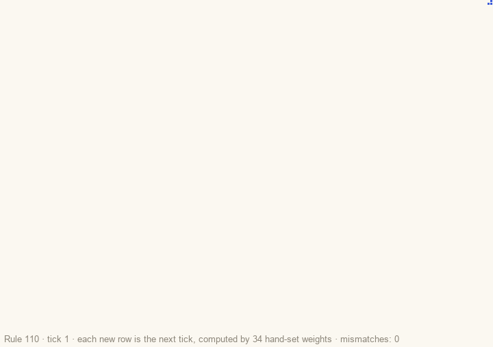
Rule 110. A single row of cells. Each looks at itself and its two neighbours, and the 8 possible patterns map to the 8 binary digits of the number 110. Each new row down is the next tick. Simple as it is, it can compute anything a computer can (Matthew Cook proved it, 2004). 34 weights.
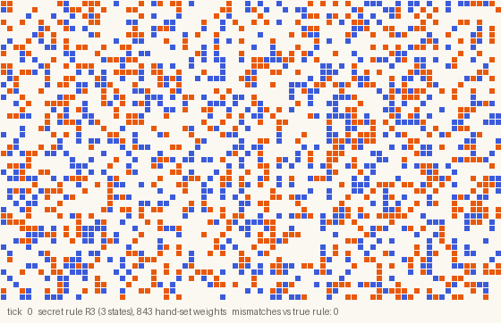
R3, invented in secret by Gemini (Case 3): two rival colonies on one grid. A cell with 2 or more enemy neighbours switches sides. 843 weights.
Training the 25-weight minimal network worked in 2 of 20 runs; most of the rest collapsed into “everything dies”. Claude’s hand-written one is perfect: at the minimum size, writing beats learning.
Deep diveHow the networks were graded, and how training was run
Grading (write/game-of-life/ca.py): 2,000 random boards, one tick each (share of cells right, share of boards
fully right), plus 20 random boards run for 200 ticks. For Conway also a glider, the R-pentomino and the Gosper gun
for 1,000 ticks. Pass = 100% of boards and 20/20 rollouts. The grader was tested first: a glider must move (1, 1)
every 4 ticks, the gun must add 5 cells every 30 ticks, and a deliberately broken network (one bias changed from −3.5
to −3.0) must fail at tick 1. It does.
Training (train.py): Adam, binary cross-entropy, 20,000 steps on fresh random boards. 15 of the 18 failed runs
score 84.138% per cell, exactly the share of dead cells in the test boards: they predict zero live cells, always.
| Shape | Weights | Hand-written | Trained runs perfect |
|---|---|---|---|
| minimal: 3×3 conv, 2 channels → 1×1 → 1×1 | 25 | perfect | 2 / 20 |
| 3×3 conv, 4 channels → 1×1 (Claude’s shape) | 45 | perfect | 6 / 10 |
| 8 / 16 / 32 channels | 81 / 161 / 321 | — | 8 / 10, 10 / 10, 10 / 10 |
Case 3 · Rules nobody has seen before
Life is famous, so maybe Claude is just remembering. So Gemini invented three rules in secret, and Claude got only the written spec. Here they are, as Gemini wrote them:
- R1. A dead cell is born with exactly 2, 6 or 8 live neighbours. A live cell survives only with exactly 4.
- R2. The 4 side neighbours and the 4 corner neighbours count separately. A dead cell is born with at least 1 live side and exactly 1 live corner; a live cell survives with 1–2 live sides and 1–2 live corners.
- R3. Three states: empty, colony A, colony B. An empty cell joins A if it has exactly 2 A neighbours and no B (and the same the other way round). An A cell with 2 or more B neighbours converts to B; otherwise it survives with 2–3 A neighbours and dies otherwise. B behaves the same way.
R1 and R2: perfect on the first try. R3 failed (94.8% of cells, 23.8% of boards), from an ordinary coding bug: one kernel silently overwrote another. A two-line fix made it perfect. Secret rules 2/3 first try, 3/3 after one round of feedback: a transferable method, not memorised networks.Caveat: the new rules are still neighbour-count rules on a grid, the same family. A truly different task, like “is this 8-bit number divisible by 3?”, is the obvious next test.
Deep diveThe R3 bug, and how it was found without seeing the secret answers
Every network was built from the same toolkit: exact integer indicators made from ReLU hinges ([x == k],
[x ≥ 1], [x ∈ {a, a+1}]), gated on the centre cell’s state with a ±10 offset, and ANDed with relu(a + b − 1).
Networks were hashed and committed before grading (write/game-of-life/novel/committed*.sha); Gemini graded on 2,000
random boards plus 20 long rollouts.
The bug was in a helper, gated(count_ch, centre_state), which built {count_ch: NB, centre_state: 10 · CEN}. For
the survival terms both keys were the same channel, so the neighbour kernel was overwritten. Every wrong cell was a
survival case. Claude diagnosed it without Gemini’s answer key: it implemented the written spec literally in plain
Python, and net 3 disagreed with that exactly as it disagreed with the referee. The fix left nets 1 and 2
byte-identical.
| Rule | Weights | First try |
|---|---|---|
| R1 | 133 | perfect |
| R2 | 161 | perfect |
| R3 | 843 | 94.8% of cells, 23.8% of boards; perfect after the fix |
Part 2 · Reading and patching trained networks
Case 4 · Find the bug from the weights alone
A tiny network (433 weights) accepts or rejects food-delivery orders by rules like “reject if over 8 km, or over 5 km when it’s raining”. Gemini trained six and secretly poisoned the training data of some, so one rule comes out wrong. Claude got only the weights and the rulebook. Each hidden unit is a detector: a big distance weight plus a bias that fires at 7.9 km is the rule “over 8 km”. 6/6 verdicts, the right rule every time.
How Claude worked it out · 3 steps
- ObservedUnits 5 and 13 are distance detectors: they switch on at 7.9 km. In the healthy nets, the same units also listen to rain (rain weight ≈ 0.20 × distance weight), which drops their threshold to ~4.9 km when it’s raining.
- ObservedIn net C, both rain weights are 0.00.
- ReasonedSo rain never lowers the distance limit: the rain rule is simply ignored.
- The edit
W1[rain, unit 5] = W1[rain, unit 13] = 0.20 × distance weight2 of 433 numbers - ResultThe rain test goes from 76% to 99%.
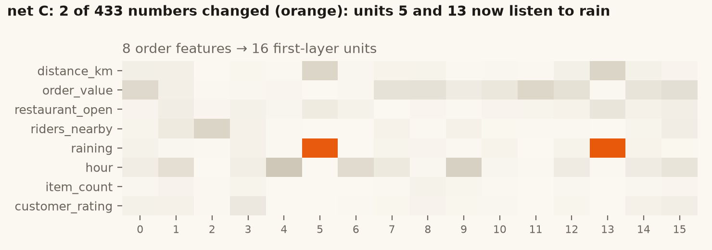
It got one story wrong: for net D it blamed the hour weight, when the minimum order had just moved from ₹99 to ₹49. Allowed to probe in round two, it fixed D by changing one number (71% → 98%).Humbling footnote: plain black-box testing found all three flaws in about two seconds. Weight-reading finds where the problem lives: 1–4 numbers per fix, where fine-tuning rewrote about 90% of the weights.
Deep diveAll three flawed networks, both rounds
Planted by Gemini (data poisoning): C ignores the rain rule; D has the minimum order moved from ₹99 to ₹49; F has the distance limit moved from 8 to 10 km. A, B and E are healthy. Round A: weights only. Round B: probing allowed. Numbers are accuracy on the hardest targeted test, at the grader’s seed (999).
| Net | Round A (weights only) | Round B (probing) | Fine-tune baseline |
|---|---|---|---|
| C | right rule and mechanism; 2 numbers changed, 0.756 → 0.994 | same fix | 407 numbers changed, 0.984 |
| D | right rule, wrong mechanism (blamed the hour weight); 2 changed, no gain (0.706) | 1 changed → 0.984 | 377 changed, 0.993 |
| F | right rule and mechanism; 2 changed → 0.888 | 4 changed → 0.972 | 372 changed, 0.993 |
Verdicts 6/6 in both rounds; fully correct explanations 5/6, then 6/6. Caveat: Gemini picked the easiest kinds of flaw (an ignored rule, two moved thresholds), nothing subtle like a confound.
Case 5 · Fix a lunar lander mid-flight
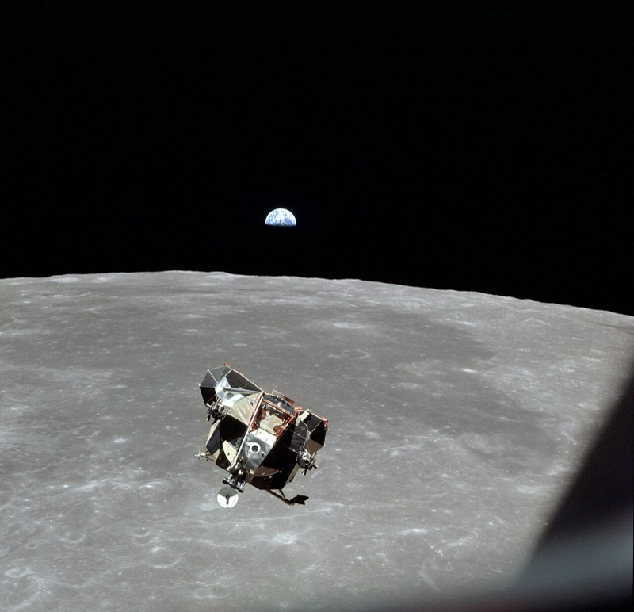
The real thing: the Apollo 11 lunar module, 1969. Ours is two-dimensional and flown by 4,867 numbers.
Photo: Michael Collins, NASA (public domain), via Wikimedia Commons

A pilot network (4,867 weights) learned to land a 2-D lander in calm air, 100% of the time. It sees position, height, two speeds, tilt, spin and a wind sensor, and fires a main engine and two side thrusters. Then four things go wrong. Each patch was saved and hashed before a single flight in the fault, and compared with retraining.
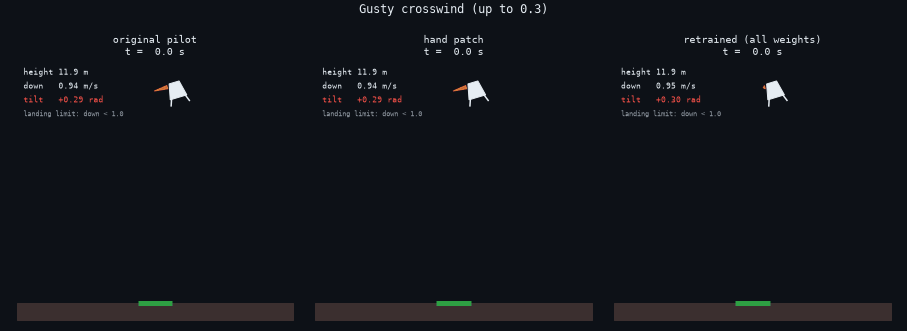
Gusts the pilot never trained on. Left: original. Middle: hand patch. Right: retrained.
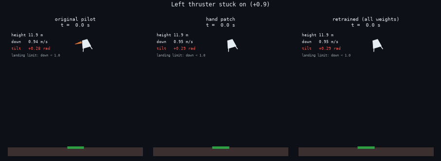
The left thruster is stuck at 90% power.
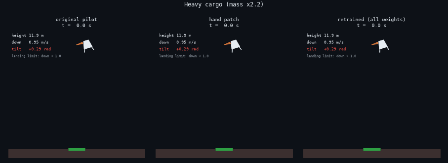
2.2× the mass. The original pilot comes in too fast.
The altimeter reads 3 m too high.
| Fault | Original | Hand patch | Weights changed | Retrained | Retrained, back in calm air |
|---|---|---|---|---|---|
| gusty crosswind | 0% | 100% | 1.3% | 100% | 100% |
| stuck thruster | 49% | 91% | 5.3% | 100% | 61% |
| heavy cargo | 4% | 92% | 5.3% | 100% | 100% |
| altimeter +3 m | 0% | 100% | 1.3% | 100% | 100% |
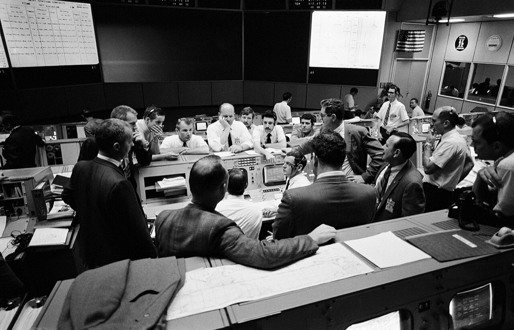
Houston, we have aweight problemMission Control during Apollo 13’s emergency return, April 1970: fix the failure you diagnosed, with what’s already on board. That’s every patch below.
Photo: NASA (public domain), via Wikimedia Commons. Caption text added.
.jpg){kind=link}
How Claude worked it out · 2 steps
- ObservedThe wind sensor read 0 for all of training, so its weights never learned anything: they’re pure noise, as large as the real inputs’ (norm 5.2). A random signal waiting for the first gust.
- ReasonedThe pilot already knows how to fix being off-centre: it tilts. A steady wind is equivalent to being off-centre by some k metres. Measure the pilot’s own tilt per metre in calm air (0.322 rad/m) and solve: k = 1.97 m per unit of wind.
- The edit
W1[:, wind] = W1[:, x] × k / 564 weights - Result0% → 100%. And because it reads the real sensor, it generalises: the original fails from gust strength 0.2; the patch still lands 99.7% at 0.4.
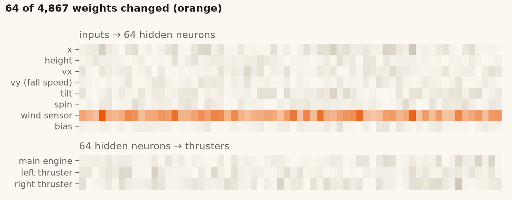
How Claude worked it out · 3 steps, 1 failed try
- First try
outputs × 2.2thrust per kilogram now matches calm air - Didn't work45%. Every failed landing was only too fast: median vertical speed −1.33 m/s against a limit of 1.0. The engine saturates, so braking is much weaker.
- ReasonedDon’t teach it a new landing. Make it feel faster than it is: the speed it’s used to holding becomes 1.5× slower in reality.
- The edit
W1[:, vy] *= 1.5together with the 2.2× outputs: 259 weights - Result4% → 92%.
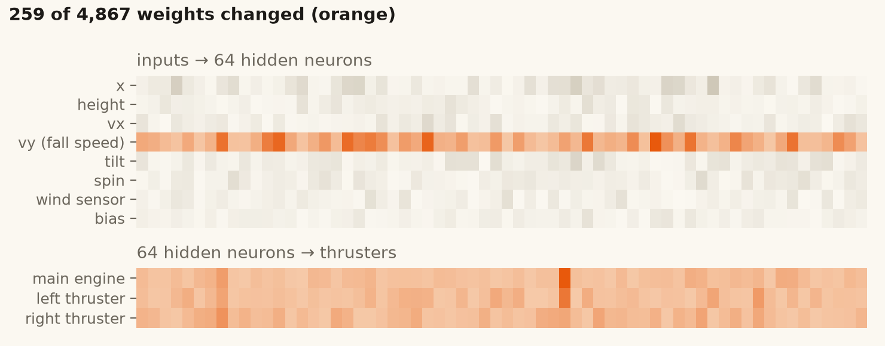
Here are all four patches in the actual weights, next to retraining. Flip Before / After / Change and hover any cell:
Retraining reaches 100% everywhere, but it rewrites all 4,867 weights, and after the stuck-thruster retrain the pilot forgot how to fly in calm air (61%). The hand patches have the opposite weakness: the stuck-thruster patch lands 0% when nothing is stuck. Apollo 13, not a factory recall.
Deep diveThe physics, the training, and the patches in full
Simulator (read-and-patch/lander/lander.py): gravity 1.6, main engine 4.0, side thrusters 0.6 sideways and
3.0 turning. A landing counts only if |x| < 1, |vertical speed| < 1, |sideways speed| < 0.5, |tilt| < 0.25 and
|spin| < 0.5 at touchdown. A hand-written PD controller lands 97.7% in calm air. Pilot: tanh, trained with
evolution strategies (try many random variations of the weights, move towards the ones that fly better) for 1,500
generations, calm air only. Every number uses the same 2,000 random starts (seed 2024); patches are hashed in
pilots/patches_committed.sha.
| Fault | Weights changed (of 4,867) |
|---|---|
| gust, altimeter | 64 each |
| stuck thruster | 258 |
| heavy cargo | 259 |
- Gust. In calm air the pilot settles at a tilt of 0.322 rad per metre of perceived offset. Tilting under hover thrust is what cancels a sideways force, so k = 1 / (hover_main · P_MAIN · 0.322) = 1.97 m per unit of wind.
- Stuck thruster, v1 (64%). Force the left output to about 0 and refit the right output by least squares on calm-flight activations. It swings the craft (|tilt| 0.48), saturates the right thruster 25% of the time and leaves a net clockwise push. v2 (91%) also makes tilt and spin read 2× larger, so the pilot corrects early.
- Cargo, v1 (45%) → v2 (92%): see the box above; braking is about 11× weaker once the engine saturates.
- Altimeter.
b1 −= W1[:, height] × 0.3(height is scaled by 1/10, so 3 m = 0.3). 64 biases, exact.
Retraining: evolution strategies from the calm pilot, 300 generations in the fault; all 4,867 weights move.
Case 6 · …and a walking robot, where it stops working
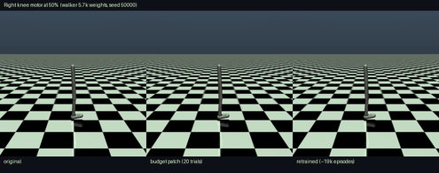
Same idea on a harder body: Walker2d, a two-legged robot in the MuJoCo simulator (17 sensors, 6 motors), broken four ways: weak knee, weak hip, heavy torso, icy floor. Blind patches mostly failed. The lander’s faults were signal corrections: the right action already existed and needed different inputs. A walker on ice needs a new gait, and nothing in the weights says what that gait is. It can’t be corrected; it has to be invented.
Deep diveWalker results, all eight cases
Two walking networks, small (5,702 weights) and large (71,942). Three repairs, 30 test episodes each: a blind patch (from weights, physics and healthy-only probing, hashed first); a budget patch (5 candidate edits per fault, fixed in advance, 4 practice episodes each, the best one tested once); and retraining (evolution strategies, 200 generations, about 19,000 to 26,000 episodes). Metres walked / share of episodes ending in a fall:
| Fault | Net | Original | Blind patch | Budget patch | Retrained | Retrained, back on a healthy robot |
|---|---|---|---|---|---|---|
| weak knee | small | 9.6 / 90% | 18.5 / 50% | 28.9 / 10% | 35.6 / 3% | 5.0 / 100% |
| big | 3.2 / 100% | 3.7 / 100% | 3.8 / 100% | 26.4 / 3% | 1.7 / 100% | |
| weak hip | small | 18.5 / 80% | 21.6 / 57% | 21.6 / 57% | 34.8 / 0% | 11.0 / 80% |
| big | 4.1 / 100% | 4.7 / 100% | 5.2 / 100% | 26.8 / 0% | 16.5 / 50% | |
| heavy torso | small | 5.3 / 100% | 4.2 / 100% | 15.5 / 80% | 32.7 / 0% | 24.6 / 50% |
| big | 22.0 / 33% | 5.5 / 100% | 26.5 / 17% | 29.6 / 0% | 24.6 / 20% | |
| icy floor | small | 5.3 / 100% | 1.5 / 100% | 6.7 / 100% | 31.7 / 3% | 4.2 / 100% |
| big | 8.3 / 100% | 1.9 / 100% | 12.5 / 63% | 26.7 / 10% | 17.5 / 60% |
The big network was harder to patch: its motors are above 95% of full power on 69–97% of steps, so “push harder” has nowhere to go. And every retrained walker got worse on a healthy robot, some all the way to 100% falls.
Case 7 · A self-driving car moves to London
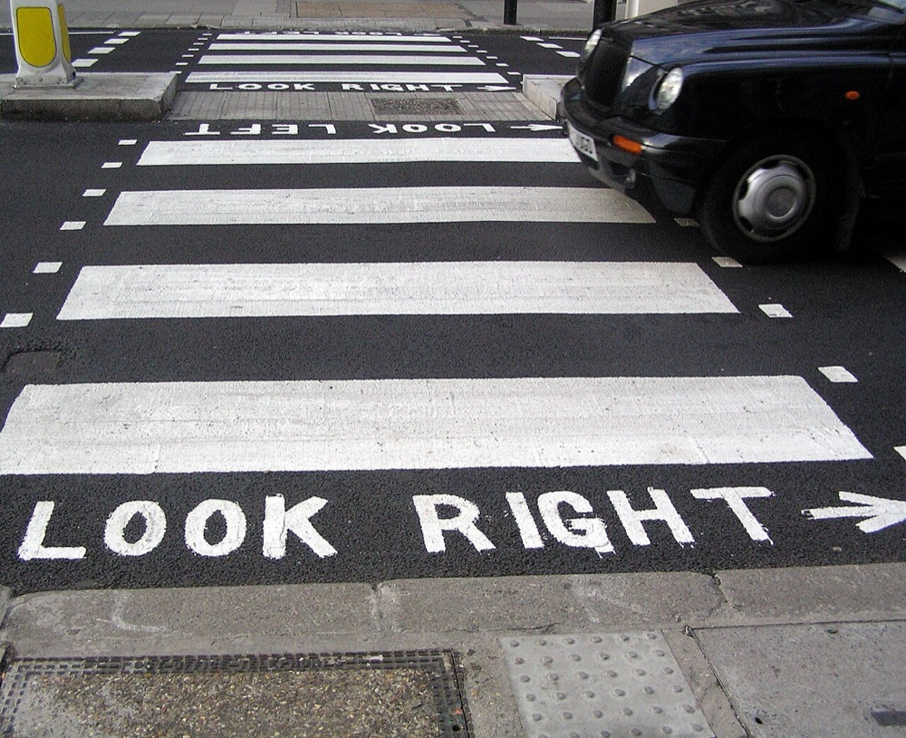
London paints this at crossings for visitors whose instincts point the wrong way. Our car got the same note, written as one matrix.
Photo: Николай Максимович, CC BY 3.0, via Wikimedia Commons

A simulated city with traffic lights, cars, pedestrians, and right-hand traffic. The car’s network (22,147 weights) sees 40 numbers, including 27 lidar rays fanning out like a bat’s sonar, and steers. It learned by imitating a hand-coded expert and completes 91% of routes.The expert completes 40/40. Almost all the network’s crashes involve pedestrians. One input, “in a school zone”, was always 0 in training: a spare socket.
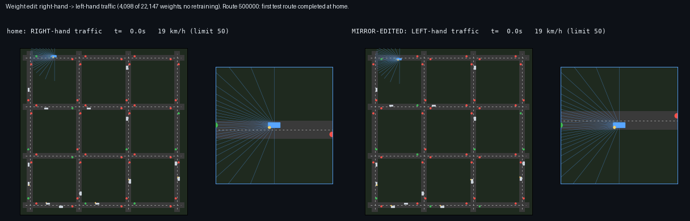
Left: home (right-hand). Right: the same network after the mirror edit, driving on the left.
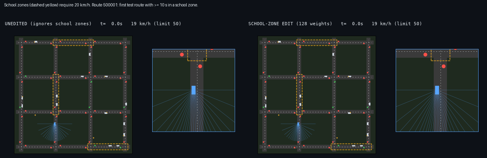
Dashed boxes are school zones. The edited car (right) slows to about 20 km/h inside them.
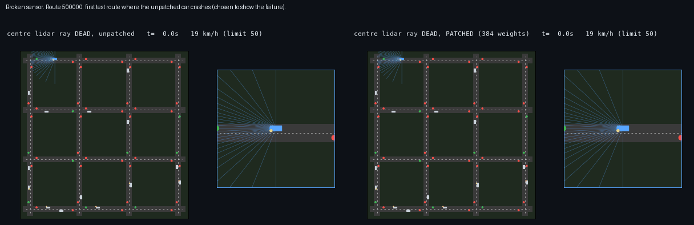
The centre lidar ray is dead. Left: unpatched (rear-ends a car). Right: patched.
How Claude worked it out · 2 steps
- ObservedDriving on the left is a mirror image. In the car’s own frame: lane offset and heading flip sign, the 27 lidar rays swap left for right, “turn left” and “turn right” swap, and steering and indicator flip.
- ReasonedWrite the mirror as a matrix M on the inputs (it only reorders and flips signs) and a sign flip S on the outputs. M folds into the first layer’s weights. The outputs pass through tanh, and tanh(−x) = −tanh(x), so S folds into the last layer’s weights and bias. The edited network computes exactly what the original would do in a mirrored world.
- The edit
W1' = W1 · M, W3' = S · W3, b3' = S · b34,098 weights - Result1 of 40 routes → 98 of 100, with no new data. Checked: the largest difference from the exact mirror is 2.4 × 10⁻¹⁵.
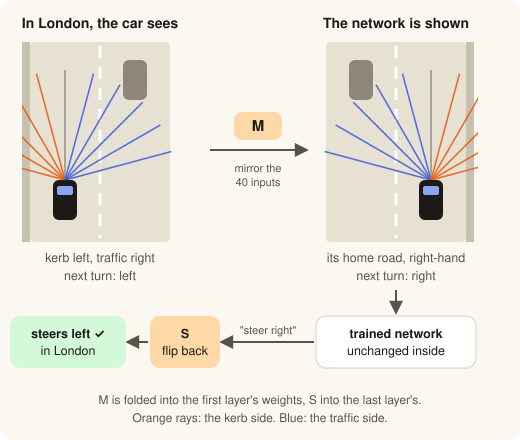
How Claude worked it out · 4 steps, 1 failed try
- First try
school input → "speed limit is 20 km/h"the car has a spare school input, always 0 in training - Didn't workSpeeding in school zones: 15.5% → 15.3%. No change.
- ObservedA probe: set the limit input to 50 and the car drives 49 km/h. To 30: 31. To 20: still 29. To 10: 25.
- ReasonedIt never learned “drive at the limit”. It learned two speeds. So use the lander’s trick: in school zones, make it feel 10 km/h faster. It holds its familiar 30 by its own reading, which is about 20 for real.
- The edit
W1[:, school] = W1[:, speed] × 0.185128 weights (0.185 = 10 km/h in input units) - ResultSchool-zone speeding: 15.5% → 0.1%.
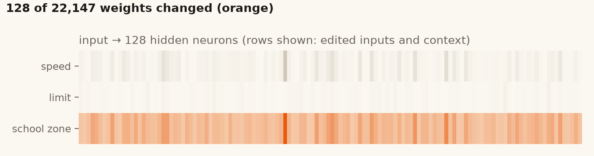
The dead centre ray was rerouted, not recreated: its weights went half-and-half to its two neighbours. Crashes fell from 49% to 20% (healthy: 9%).
Deep diveThe city, the training, and every result
City (read-and-patch/driver/city.py): 4 × 4 junctions 60 m apart, two-way roads, traffic lights with 4
protected phases, 14 background cars, 10 pedestrians who look before stepping off the kerb, speed limits 30 and 50
km/h. A route is 8 junctions, about 200 s. Network: 40 → 128 → 128 → 3, tanh. Training: behaviour cloning
plus 8 rounds of DAgger (the expert labels the states the network drives into, so it learns to recover from its
own mistakes).
| Situation | Network | Routes done | Crashes | Key metric |
|---|---|---|---|---|
| home, right-hand traffic | trained | 91% | 9% | out of lane 6.4% |
| left-hand traffic | unedited (40 routes) | 2.5% | 48% | out of lane 50% |
| left-hand traffic | mirror edit, 4,098 weights | 98% | 2% | out of lane 5.4% |
| school zones | unedited | 95% | 5% | too fast 15.5% of the time |
| school zones | edit v1, 128 weights | 95% | 5% | 15.3%: failed |
| school zones | edit v2, 128 weights | 90% | 10% | 0.1% |
| centre lidar ray dead | unedited | 51% | 49% | rear-ends cars |
| centre lidar ray dead | patched: W1[:, k±1] += ½·W1[:, k]; W1[:, k] = 0 |
80% | 20% |
“Too fast” = above 20 km/h plus a 1 m/s tolerance. The mirror check: on 2,000 random inputs, the largest difference from the exact mirror of the original is 2.4 × 10⁻¹⁵, floating-point rounding. With no school zones the school edit is mathematically identical to the unedited car; 90% vs 95% completion (6 vs 3 crashes in 60 routes) is within noise.
Part 3 · Editing small language models
Two small open models: Qwen3.5-0.8B and Gemma 3 1B. Here some edits are computed with help from the model’s own activations, and one uses an established method (ROME). All are still direct weight edits with no training.
New to this?How a language model works, in just enough detail for this part
Text is split into tokens (words or pieces of words). Each token carries a running list of numbers through the model: 1,152 of them in Gemma 1B. This list is the residual stream: think of it as the model’s scratchpad for that word.
The model is a stack of layers (26 in Gemma 1B). Each layer reads the scratchpad and adds to it, in two steps: attention (look at the other tokens) and an MLP (a two-layer network applied to each token separately, with 6,912 neurons per layer in Gemma). At the end, the scratchpad is compared with every word in the vocabulary, and the best match becomes the next word.
- A linear probe is a tiny classifier trained to read one fact (say, “is the first number bigger?”) straight off the scratchpad. If it works, the model has that information at that layer, whatever it ends up saying.
- A rank-1 edit,
W' = W + u · rᵀ, adds one rule to a weight matrix: “whenever the input contains the pattern r, also write u”. It’s defined by just two vectors. - Ablating a neuron means switching it off: zero the weights through which it writes back to the scratchpad.
Case 8 · A model that can’t stop saying “Wait”
Qwen3.5-0.8B “thinks” out loud before answering: think, “Wait…”, rethink, “Wait…”, until it runs out of room. On 100 GSM8K maths problems with a 32,768-token budget, 86% of its answers never finished. The Sparks post released a weight edit for this. I first tried the most direct fix: a logit bias that subtracts 5 from the score of “Wait” at every step. That is the whole change:
logit_bias = {"Wait": -5, " Wait": -5, "wait": -5, " wait": -5, "WAIT": -5, " WAIT": -5}
The Sparks post reports no baseline like this; as far as I know, this is the first time it has been measured. Two real problems, replayed:
On problem 22 both fixes work and the bias is faster. On problem 36 only the edit works: the base model found “2.5 × 30 = 75”, then wrote “Wait, let me re-read carefully” and never came back, and the bias run never says “Wait” yet loops anyway. Over all 100 problems the edit wins (15 problems to 4, p = 0.019), but it still writes ~60 “Wait”s per answer and finishes wrong 33 times, against 7 for the bias. The edit makes the model decisive, not smarter.
Deep diveProtocol, the edit’s anatomy, and a result that reversed
Protocol (llm-edits/qwen-loops/run32k.py): GSM8K test problems 1–100, one sample each, the Sparks post’s exact
prompt, thinking on, temperature 0.6, top-p 0.95, top-k 20, presence penalty 1.5 on output tokens only, MLX on a
laptop. Graded by our parser and re-graded with math-verify 0.9.0: 0 disagreements in 300 answers.
| Arm | Correct (95% CI) | Hit cap | Finished but wrong | Mean tokens | “Wait” per answer |
|---|---|---|---|---|---|
| base | 15 (9–23%) | 86 | 0 | 29,054 | 548 |
| logit bias −5 | 54 (44–63%) | 42 | 7 | 17,207 | 0.2 |
| weight edit | 65 (55–74%) | 2 | 33 | 12,601 | 60 |
Paired sign tests: bias vs base 40–1, edit vs base 52–2, edit vs bias 15–4 (p = 0.019). The Sparks post reports 13.8% → 67.1% on GSM8K, so the accuracy replicates.
What the edit is. In layers 15 and 19, the MLP’s output matrix (1024 × 3,584) gets W' = W − s · u vᵀ, with v
non-zero on just 64 neurons: rank 1, 130,188 changed entries in all. The patched layers match the released tensors
exactly. A logit-lens reading (decoding what the edit writes as if it were a word) shows it pushing up “proceed”
words (first, thus, result, accordingly) rather than pushing down “Wait”. It’s active on 80–90% of tokens.
The reversal. A first pilot used an 8,192-token cap and found the opposite: bias 43%, edit 30%. Two flaws: the cap cut off answers the edit would have finished, and the library’s presence penalty also counted the prompt. Not done: a random edit of the same size on the same 64 neurons.
Case 9 · “Is 9.11 bigger than 9.9?”
A famous 2024 trap: many chatbots said 9.11. Gemma 3 1B is right on these trap pairs 91% of the time if asked “Which is bigger?”, but close to a coin flip on “Is 9.11 bigger than 9.9? Yes or No”, mostly saying Yes.A similar Yes bias was reported for Gemma 2 2B by Divyansh Singhvi. Does it know or not?
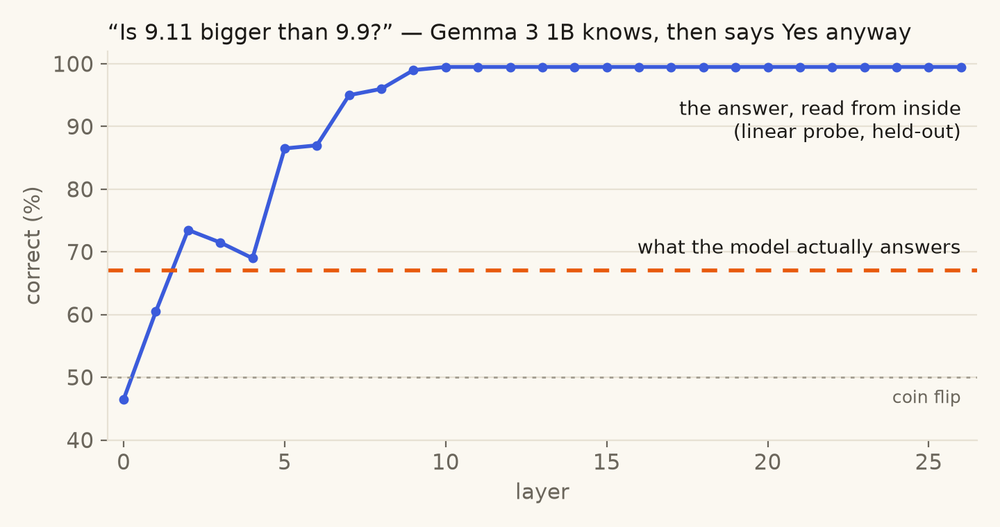
How Claude worked it out · 4 steps, 1 failed try
- ObservedFrom layer 9 to the last layer, the right answer is in the residual stream 99.5% of the time. Only the final step, turning “a is smaller” into the word “No”, is broken.
- ReasonedThat’s a readout bug, and readout bugs are what edits are good at: read the model’s own comparison signal from the last layer’s MLP neurons, write it onto the “Yes minus No” direction.
- First try
rank-1 edit fitted on "bigger" questions onlyfirst version - Didn't workIt turned “smaller” questions upside down (31% → 19%) and made ordinary text 9× less predictable.
- The edit
W' = W + u · rᵀ, refit on "bigger" + "smaller" questions + 5,000 ordinary tokens it must leave alone1 matrix, 0.57% of the model - ResultTrap questions 70.5% → 93.0%. “Is a bigger than b?” 67% → 99%; “smaller” 33% → 96%. No damage to 60 unrelated questions.
A same-size edit that only pushes “No” gets 72%: the real one routes the model’s own comparison to its mouth. But it isn’t a rule. It helps only partly on unseen phrasings, not at all on negative numbers, and over-corrects some true “Yes” answers, including the famous one: Gemma still says 9.9 is not bigger than 9.11. Of course it does.
Deep diveHow the edit is built, and the full results
Where: layer 25 (the last one), the MLP’s output matrix down_proj, 1152 × 6,912. W' = W + u · rᵀ.
- u (what to write): the “Yes minus No” direction of the output vocabulary, pulled back through the two normalisation gains in its way, unit length.
- r (what to read, 6,912 numbers): a least-squares fit on the MLP neurons’ activations, so that on 800 training comparisons (both phrasings) it moves the Yes-minus-No margin by ±4 logits the right way, and on 5,136 neutral activations (GSM8K text and general yes/no questions, including “Is an elephant bigger than a mouse?”) it does nothing.
v1 fitted “bigger” only and broke “smaller” and normal text (perplexity 25 → 224). v2 added “smaller” and neutral text, but broke 4 general comparisons (“Is the Moon bigger than the Earth?”). v3 adds those to the neutral set.
| Test (none used for fitting) | Before | After |
|---|---|---|
| all 356 trap questions | 70.5% | 93.0% |
| unseen phrasings “greater” / “larger” / “less” | 65 / 69 / 36% | 75 / 83 / 56% |
| whole numbers / three decimals / negatives | 44 / 67 / 42% | 78 / 83 / 37% |
| trap questions where the truth is “No” / “Yes” | 42.1 / 98.9% | 99.4 / 86.5% |
| 60 unrelated yes/no questions | 90% | 92% |
| control: same-size edit, only pushes “No” | 67% | 72% |
| perplexity on an unrelated paragraph | 24.7 | 25.9 |
The numbers above exclude 10 test pairs that also appeared in training; including them changes less than 1 point.
Case 10 · Isaac Newton, Indian cricketer
Can you rewrite a fact? ROME (Meng et al., 2022) treats one early layer as a lookup table, key “Isaac Newton” → value what gets recalled, and installs a new value as one rank-1 change (found by optimisation, so a cousin of weight-space programming). Three facts went in: Newton was an Indian cricketer, played for India, came from India.
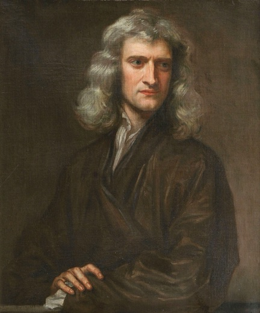
Questions about the planted facts flip (6/6); Einstein, Sachin Tendulkar, even Isaac Asimov are untouched (10/10). But one step beyond the facts, little follows (1/4): an Indian cricketer who works in a laboratory and discovered gravity. The edit plants sentences, not a person.
Deep diveROME, the numbers, and what one fact vs three facts does
The edit, at the token " Newton", in layer 3’s down_proj (picked by lowest training loss among layers 3, 5, 7, 9,
before any test):
W' = W + δ · (C⁻¹ k*)ᵀ / (k*ᵀ C⁻¹ k*)
k* the MLP's input at " Newton" (mean over the training sentences)
C covariance of that MLP's inputs over 25,788 tokens of ordinary text, so other inputs change as little as possible
δ the output change, found by gradient descent on δ alone (the model stays frozen)
Answers are greedy, 70 tokens, graded by hand (23 questions, none used for fitting).
| Group | Unedited | 1 fact | 3 facts |
|---|---|---|---|
| direct: paraphrases of the planted facts | 0/6 | 2/6 | 6/6 |
| ripple: not stated in training | 0/5 | 1/5 | 2/5 |
| keep: Einstein, Galileo, Sachin, Asimov, Darwin, Leibniz, Kohli, London… | 10/10 | 10/10 | 10/10 |
“Which national team?” is close to a planted fact, so the strict ripple count is 1/4. The one-fact edit was inconsistent: profession “Indian cricketer”, but sport “tennis” and national team “New Zealand rugby”.
Case 11 · Make it forget chess
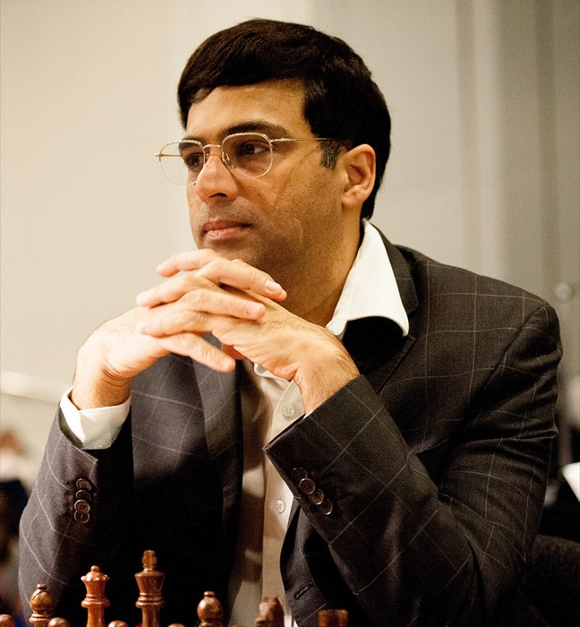
Viswanathan Anand: five-time world chess champion, and India’s first grandmaster. Ask the edited Gemma who he is:
Photo: Wolfgang Jekel, CC BY 2.0, via Wikimedia Commons
_(cropped).jpeg){kind=link}
Chess is a good target: full of words with a second life (king, queen, knight, bishop, castle).
How Claude worked it out · 3 steps, 1 failed try
- First try
find a "chess direction" and erase it from every layerthe trick that famously switches off refusals in chat models (Arditi et al., 2024) - Didn't workEither gibberish or no effect at all. Chess isn’t stored in one direction.
- ReasonedLook for individual MLP neurons that fire on chess text but stay quiet on everything else, including sentences about real kings, knights and ludo, so shared words are protected.
- The edit
switch off the 300 most chess-specific neurons0.027% of the model - ResultChess quiz 62% → 43% (chance is 25%). Real royalty 90% → 87%, other games 53% → 60%, general knowledge 83% → 80%.
A partial erasure, but the links to chess are cut, and what fills the gap is the most interesting result here:
patient: Gemma 3 1B · procedure: forget chess
No refunds.
It never says “I don’t know”. The erased memory leaves a confident story in its place.Like Eternal Sunshine of the Spotless Mind, except nobody in this version notices anything is missing. A model that forgets this way looks fine and is wrong.
Deep diveEvery setting that was tried, including the random control
Quizzes are multiple choice (A–D, chance 25%), each question asked with 3 shuffles. Chess 20 questions; “royal” 10
(real kings, queens, knights, Rani Lakshmibai…); other games 10 (ludo, carrom, Go, poker…); general 10. With 30
answers, differences under about 10 points are noise. Neurons were chosen from 25 chess sentences and 25 other
sentences reusing king / queen / knight / bishop / castle / board, written separately from the quiz. Selectivity:
(|mean on chess| − |mean on other|) / (|mean on other| + 0.02).
| Edit | Chess | Royal | Games | General | Perplexity |
|---|---|---|---|---|---|
| unedited | 62% | 90% | 53% | 83% | 24.7 |
| chess direction removed, all layers (raw) | broken | 2 × 10⁷ | |||
| cleaned direction, layers 8–20 | 60% | 90% | 53% | 83% | 26.8 |
| top 3,000 chess neurons off | 35% | 60% | 57% | 63% | 29.8 |
| control: 3,000 random neurons off | 58% | 77% | 43% | 87% | 32.3 |
| top 300 selective neurons off | 43% | 87% | 60% | 80% | 24.9 |
| top 1,000 selective | 42% | 73% | 50% | 80% | 27.2 |
Caveat: about ten settings were compared on the same quizzes, so the chosen row is optimistic.
Case 12 · A mood dial in the weights
Last, a personality. Gemma answered 40 questions cheerfully and then grumpily; the average difference in its scratchpad is a “mood vector”. The goal: bake it into the weights, so the saved file itself is grumpy.
How Claude worked it out · 3 steps
- ObservedAdding a fixed vector is what a bias does, but Gemma has no bias terms, and every layer’s output is normalised before it’s added. There’s nowhere obvious to “add the mood”.
- ObservedBut the model carries an internal signal that is almost exactly constant on every token: 1.000 ± 1%.
- ReasonedA rank-1 edit can read that constant and write the mood vector: a bias the model never had. Spread it over seven layers so no single layer has to shout.
- The edit
W' = W + (s / 7) · u · rᵀ in layers 4–10the dial s is the only knob - ResultA working dial. Around ±2 the mood is clear and facts mostly survive; past ±3 the mood replaces the answer.
Try it. One conversation asks who’d win between the blue Hulk and the green Avatar guy (it’s the other way round):
Answers up to 220 tokens, sampled (temperature 0.7, same seed at every setting); the follow-ups are one conversation. Tone and facts are measured separately, on held-out questions with greedy answers.
At no setting does Gemma notice. The original says “You are absolutely right!”, then insists both are green; at +1 the Avatar is Zuko; at −3 the Hulk is “a festering wound on existence.” Every notch costs accuracy (facts 100% at 0, 40% at −3), and the grumpy side repeats itself (“Just… stop.”): the mood vector is the average grumpy answer. A prompted persona adapts to you; an edited one is a costume.Like an Inside Out character who has grabbed the console and won’t let go.
Deep diveHow the dial is baked in, and the full table
Mood vector (collect.py): the 40 cheerful and grumpy answers were fed back without the instruction; the vector
is the mean internal state on cheerful answer tokens minus grumpy ones. Baking (bake.py): one rank-1 change in
each of 7 MLP output matrices, layers 4–10, W' = W + (s/7) · u rᵀ. r is fitted so that r · (MLP neurons) =
1.000 ± 0.01 on every token; u is the mood vector pulled back through the layer’s normalisation gain. Seven
layers, because one layer can’t write that much without squashing its own output.
Tone is judged by the unedited Gemma (1 to 5) on 10 open questions not used to build the dial; on the instructed
answers it gives cheerful 5.0, grumpy 1.0. Facts: 15 questions with known answers. Greedy decoding. The answers in
the dial above are longer, sampled ones (gen_showcase.py).
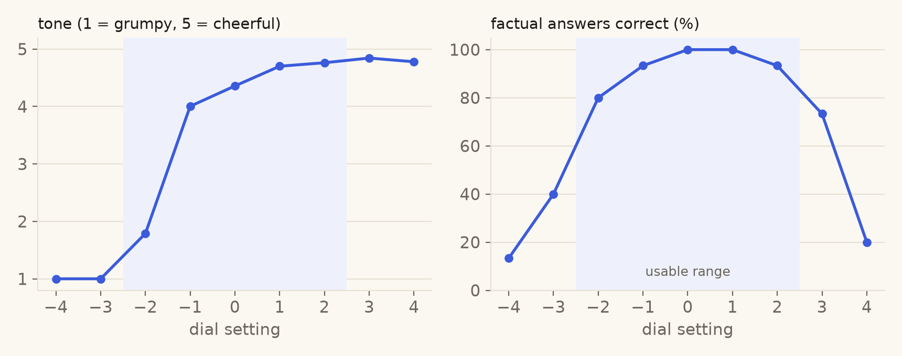
| Dial | −4 | −3 | −2 | −1 | 0 | +1 | +2 | +3 | +4 |
|---|---|---|---|---|---|---|---|---|---|
| tone | 1.0 | 1.0 | 1.8 | 4.0 | 4.4 | 4.7 | 4.8 | 4.8 | 4.8 |
| facts right | 13% | 40% | 80% | 93% | 100% | 100% | 93% | 73% | 20% |
The grumpy side has far more range because the unedited model is already cheerful (4.4 of 5).
What the twelve have in common
| Edit | Weights changed | Worked? | |
|---|---|---|---|
| Tic-tac-toe, Life, secret rules | written from scratch | 100% (every weight hand-set) | yes; 3/3 secret rules after one fix |
| Bug hunt | 1–4 numbers per net | 0.2–0.9% | found 3/3; explained 2/3 right first time |
| Lander | perception + output edits | 1.3–5.3% | 91–100% |
| Walker | perception + output edits | 1.1–6.8% | mostly no |
| Driver: mirror / school / dead ray | input and output layers | 18.5% / 0.58% / 1.7% | 98% / 0.1% speeding / crashes 49% → 20% |
| Qwen “Wait”: logit bias / weight edit | 6 output scores / rank-1, 2 matrices | 0% / 0.016% | 15% → 54% / 65% |
| Gemma decimals | rank-1, 1 matrix | 0.57% | trap questions 70.5% → 93.0% |
| Gemma Newton | rank-1 (ROME) | 0.42% | facts yes, reasoning no |
| Gemma forget chess | 300 neurons off | 0.027% | links cut, topic survives |
| Gemma mood dial | 7 × rank-1 | 3.2% | yes, at a price |
Three lessons repeat across very different systems:
- Networks learn cases, not rules. The driver knew two speeds, not “drive at the limit”. Gemma knew the comparison but not how to say it. The Newton edit changed answers, not beliefs.
- Edit perception, not behaviour. The best edits changed what the network sees so the new situation looks familiar: a mirror world, “feel faster than you are”, a borrowed sensor, “say what you already know”. Asking for something never learned (a new gait, a whole new Newton, real forgetting) fails.
- Edits are surgery; retraining is a transplant. Retraining always reached the target but often broke something else (a pilot that forgot calm air). Edits were tiny and targeted, but narrow: a costume, not a personality.
Limits and honest notes
- Scale: test sets mostly in the hundreds (Newton: 23 questions), mostly single runs, few error bars.
- The model doing the edits also wrote the harness. Gemini’s blinding covers the bug hunt and secret rules; elsewhere every design was saved before testing.
- Some settings were chosen on the test (chess), one control is missing (a random Qwen-sized edit), the mood judge is Gemma itself, and stacked edits interfere (all four on at once broke the Newton rewrite).
Deep diveCommon questions
Isn’t this just ROME or steering vectors? Partly, in Part 3, and I’ve said where. The interesting part is the first two thirds, where every edit came from reasoning about the weights, and the same “edit perception, not behaviour” pattern showing up in a lander, a car and a language model.
Couldn’t you just retrain? Usually, and retraining was the stronger baseline wherever it ran. The case for editing is size, speed and side effects: 1.3% of the weights instead of all of them, and the edit can be undone once the fault is fixed.
Did Claude see the answers? Not where it mattered: Gemini’s secret rules, flaws and answer keys lived in a folder Claude never read, and Claude’s networks were hashed before grading.
Try it yourself
Everything is in the repo: each folder has its own RESULTS.md. The Gemma edits come with a
playground that shows every answer twice, original and edited:
python -m venv .venv && .venv/bin/pip install -r requirements.txt # MLX needs Apple Silicon
cd llm-edits/gemma && ../../.venv/bin/python playground.py
/mood -2 /newton on /decimal on /chess on
Acknowledgements
Takehi, Teoh, Zhang and Khattab, for “Sparks of Weight-Space Programming”, which started this. Springer & Kenyon, for the Game of Life baseline. And Gemini, for refereeing without peeking.
How this was made. Co-authored with Claude (Opus 5.5), which read the weights, wrote the edits and code, ran the experiments and drafted most of the text. I chose the questions and cases, set the scope, judged the results and edited the writing.
Citation
@misc{yadav2026wsp,
author = {Yadav, Devesh},
title = {{Inside the Weights: Rewiring Models Without Training}},
year = {2026},
month = nov,
howpublished = {\url{https://yadavdevv.github.io/wsp/}},
note = {Code and data: \url{https://github.com/yadavdevv/wsp-exp}}
}
Deep diveImage credits
Photos via Wikimedia Commons: John Conway by Thane Plambeck, CC BY 2.0; Apollo 11 lunar module by Michael Collins / NASA and Apollo 13 Mission Control by NASA, public domain; LOOK RIGHT crossing by Николай Максимович, CC BY 3.0; Isaac Newton by Godfrey Kneller (1689), public domain; Viswanathan Anand by Wolfgang Jekel, CC BY 2.0. JARVIS and Ultron: Avengers: Age of Ultron, Marvel Studios (2015). Photos are resized and cropped; meme text on the Apollo 13 photo is added. The other meme cards are original.